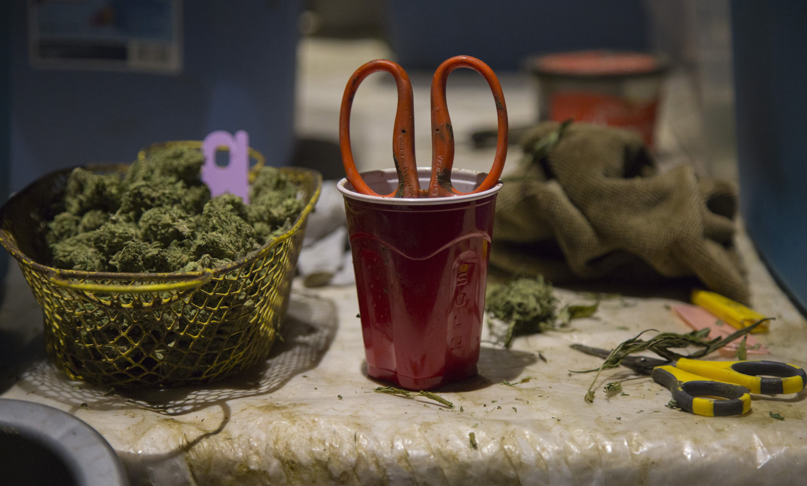
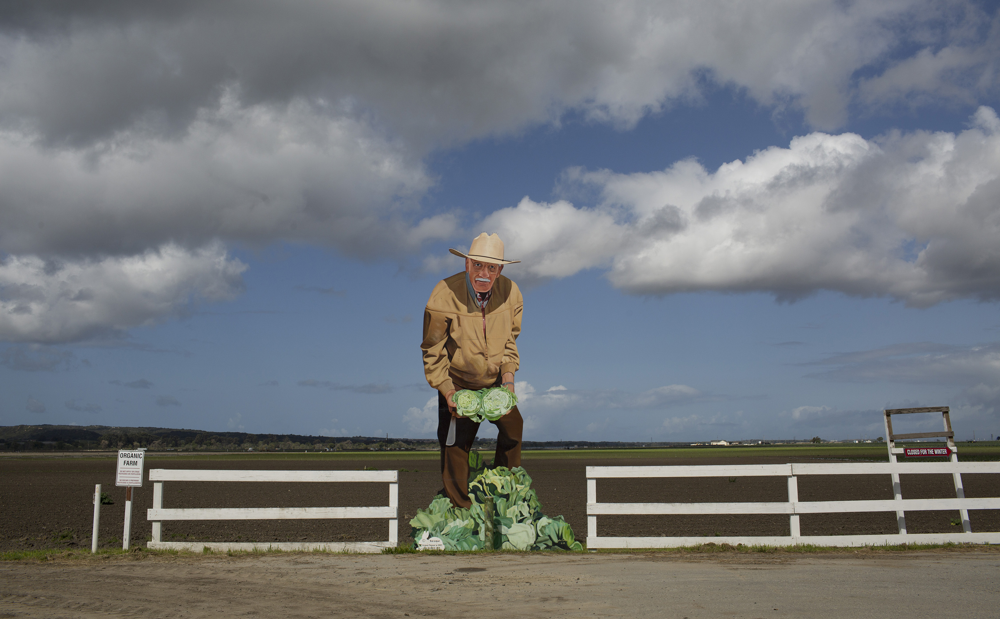

The town of Greenfield, 35 miles south of Salinas, was little more than a green field when Steinbeck was writing. The 2017 population was 17,517, according to census data. In busier months of the agricultural calendar this jumps by another 10-15,000 as itinerant workers arrive to tend the fields. The median household income is approximately $46,000, roughly 25% less than in Salinas. Greenfield is 90% Hispanic and 67% of the town’s population are U.S. citizens.
During the day strollers outnumber cars on the roads in Greenfield. The streets are named after trees, fruits and nuts (Oak, Apple, Walnut) and lead quickly to the surrounding fields. This is a town built atop farmland.
The oil crisis of the mid 2000s killed Rob Jimenez’ trucking business. He swam against the tide for a while but moved to Greenfield, to stay with his brother, after losing his house. He didn’t speak Oaxacan, like many Greenfield residents who had migrated from the south of Mexico. He applied for numerous jobs before taking a position with a cannabis company, Loudpack, in early 2018.
Jimenez, 59, started in a menial position on the extraction team. After a month he was promoted to the trimming room. On his first day he was given a brief trimming demonstration and then shown to a table piled high with bud. There were approximately 15 tables, with two trimmers stationed at each. The trimmers were given a daily target of 1-1.5 lbs. of manicured cannabis buds. Achieving this goal took almost every moment of an eight-hour shift. Mandated 15-minute breaks shrunk to five. Lunch was gobbled down in less than 30.

Rob Jimenez, a former trimmer, was fired from his position just before beginning to receive benefits.
Cameras monitored the trimmers constantly, while supervisors prowled the trimming tables barking out instructions, admonishments or reprimands. Workers were told to keep their hands above the tables at all times and not to talk in the trimming room.
Jimenez joined the UFCW soon after he was hired. This antagonized his employers, he says. “They didn’t want to hire me because, well, I’m American. I’m legal to work here. And I would ask more questions than they wanted.” He wanted to know when workers would get benefits, pay raises and promotions?
“I didn’t take shit from any of the supervisors,” he says. He was paid $15 per hour as a trimmer and wanted to use his previous experience as a chef to work in the edibles division, infusing candy and gum with cannabis extract.

A basket full of cannabis flowers next to a pair of trimming scissors soaking in a cup. Trimmers will rotate through several pairs of scissors as they become sticky with resin from the plant.
The Loudpack facility dominates the town. It is located on Cherry Avenue, across the road from the Greenfield police department and City Hall. It dwarfs both of them. Security fences surround the complex. Inside a line of modern looking greenhouses sit next to a three story, metallic office building. The front gates are thick and black. Security guards wait for employees behind heavy turnstiles.
Jimenez and the other trimmers were searched four times each day. First as they entered the complex, then again after they changed into their uniforms and again when they left the trimming room and finally, when they departed the facility.
On the eve of his three-month anniversary, Jimenez was called to see an HR manager who told him he was being let go. “She gave me my paperwork – my walking papers –and the security took me out,” Jimenez says. He thought she might have been pretending to cry. He was disappointed but not surprised. He had seen this happen before.
In the six months after January 1, 2018, Loudpack fired 189 people, according to city statistics seen by UFCW organizer Juan Cervantes. Jimenez believes that the Loudpack workforce averaged approximately 300 people during the period he worked there, from February to April, 2018. “They were getting rid of 25 to 30 a week,” he says.
No response was received from multiple emails to Loudpack.

A cutout of a farmer holding heads of lettuce off Highway 68. The Salinas Valley is referred to as the 'salad bowl of the world.'